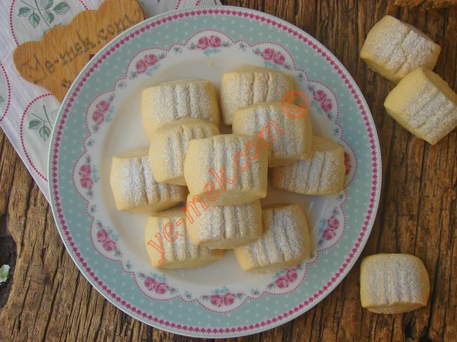

Ağızda dağılan nefis Un Kurabiyesi...Özellikle kalabalık sofraların ve doğum günü gibi özel etkinliklerin vazgeçilmezleri arasında yer alır.
Tarif:ye-mek.net
Kaç Adet:36 Adet
Hazırlanma Süresi:40 Dakika
Pişirme Süresi:25 Dakika

Un Kurabiyesi İçin Malzemeler:
- 200 gr tereyağı (oda sıcaklığında)
- 1 çay bardağı sıvı yağ
- 1 çay bardağı pudra şekeri
- 3 yemek kaşığı nişasta
- 3,5 su bardağı un
Un Kurabiyesi Nasıl Yapılır
- Derin bir kaba 200 gr oda sıcaklığındaki tereyağını koyun.
- Üzerine 1 çay bardağı pudra şekeri ekleyin.
- Yağı ve şekeri krema kıvamına gelene kadar iyice karıştırın.
- Daha sonra karışıma 1 çay bardağı sıvı yağ ve 3 yemek kaşığı nişasta koyun.
- Ardından karışıma 3,5 su bardağına yakın unu azar azar ekleyin.
- Ele yapışmayan yumuşak bir hamur elde edene kadar yoğurun.
- Hazırladığımız hamuru 4 parçaya bölün ve her 4 parçayı uzun bir rulo yapın.
- Çatal yardımıyla üzerine şekil verin ve ardından bıçak yardımıyla 2-3 parmak kalınlığında kesin.
- Yağlı kağıt serili fırın tepsisi içine dizin.
- Önceden ısıtılmış 180 derece fırın tepsisine koyun ve yaklaşık 20-25 dakika kadar pişirin.
- Un Kurabiyesi piştikten sonra fırından çıkartıp soğumaya bırakın.
- Soğuduktan sonra üzerlerine bolca pudra şekeri serpiştirin.
- Hazırladığımız Un Kurabiyelerini servis tabağına dizip, servis edebilirsiniz.